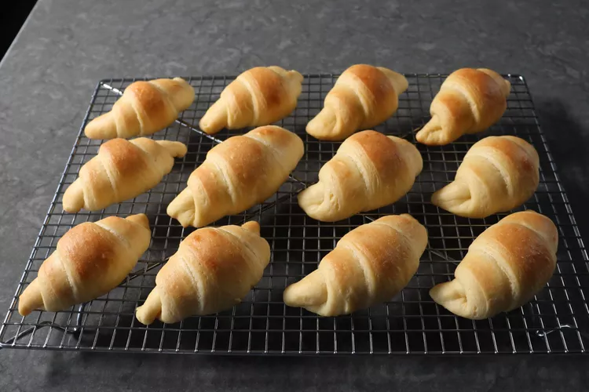

Diinner Rolls

Description
Dinner rolls are small, round pieces of bread that are typically served as a side dish during meals. They are usually soft, fluffy, and slightly sweet, often enjoyed with butter. These rolls are versatile and can be made with various ingredients like milk, butter, and eggs to enhance their flavor and texture. They are perfect for soaking up gravies and sauces or simply enjoyed on their own as a tasty accompaniment to dinner.
Ingredients
- 1 (.25 ounce) package active dry yeast
- ¼ cup warm water
- ½ cup unsalted butter
- 1 cup milk
- 3 tablespoons white sugar
- 3 ¾ cups all-purpose flour, divided
- 1 ½ teaspoons kosher salt
- 1 large egg yolk
- ¼ cup butter, melted
Steps
- Sprinkle yeast onto warm water. Stir gently and let sit until foamy and frothy, 15 to 20 minutes.
- While the yeast is proofing, place butter in a saucepan with milk and white sugar. Turn heat to medium and cook, stirring occasionally, until butter melts and sugar dissolves, 3 to 4 minutes.
- Remove from the heat and pour into a large mixing bowl; let cool until just very warm to the touch and about 120 degrees F (49 degrees C), 2 to 3 minutes.
- Add 3 cups flour, kosher salt, yeast mixture, and egg; mix gently with a spatula until it all comes together and forms a very thick and wet batter. Add remaining 3/4 cup flour and mix with your fingers, incorporating just the amount of flour you need, until dough comes together into a soft, sticky ball.
- Cover and let rise until almost doubled in size, about 1 hour.
- Transfer dough to a floured surface and knead until smooth and elastic, about 5 minutes.
- Grease the bowl with butter. Place the dough back into the bowl, cover, and let rise for 30 minutes.
- Preheat the oven to 375 degrees F (190 degrees C). Line a baking sheet with a silicone liner (such as Silpat®).
- Transfer dough back to a work surface and press it into a 1-inch thick circle. Flip over and continue pressing until circle is 1/2-inch thick; use a rolling pin if needed to achieve correct thickness. Use a pizza tool to cut dough into 12 equal wedges.
- Starting at the larger end of one wedge, roll toward the point, stretching the ends of the dough out for the first few inches. Pinch and press the point into the dough to seal and place, seam-side down, on the prepared baking sheet. Repeat with remaining dough.
- Let rolls sit until they puff up a little, 15 to 20 minutes.
- Bake in the center of the preheated oven until cooked through and just starting to turn a light golden brown, 20 to 25 minutes.
- Remove from the oven and immediately brush hot rolls with melted butter. Transfer to a wire rack to cool completely, 15 to 20 minutes.